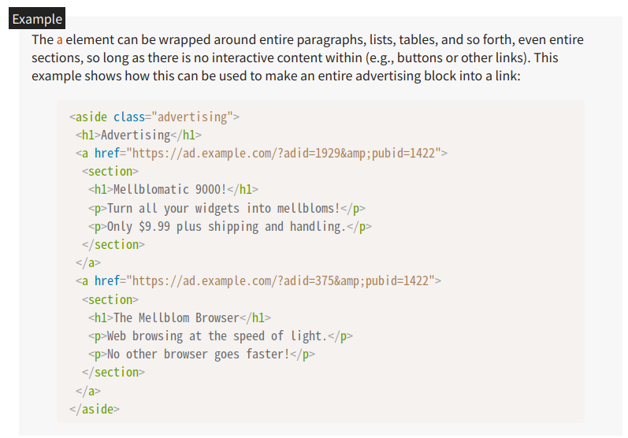

The a element can be wrapped around entire paragraphs, lists, tables, and so forth, even entire sections, so long as there is no interactive content within (e.g., buttons or other links). This example shows how this can be used to make an entire advertising block into a link:
`a` 要素は、その内部にインタラクティブなコンテンツ（ボタンや他のリンクなど）が含まれていない限り、段落、リスト、表、さらにはセクション全体を囲むことができます。以下の例は、この機能を利用して広告ブロック全体をリンクにする方法を示しています。
